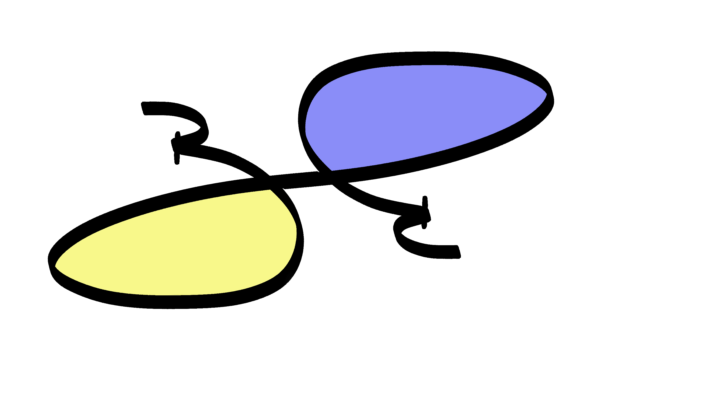

Benjamin Dally
About Me

After completing an M.A. in 2014, I was encouraged by a professor to send my thesis to an online journal. I received an email saying they would accept it but only if I revised it and re-built it in HTML/CSS.
I immersed myself in HTLM and CSS. I went into the experience blindly, but I found that it was the coding, not the writing, that kept me going.
The experience showed me what I wanted to do with my life. Coding became who I was and am. Since then I have become a highly competent Full Stack Developer who is still open to new challenges and pushing the boundaries of what can be done.